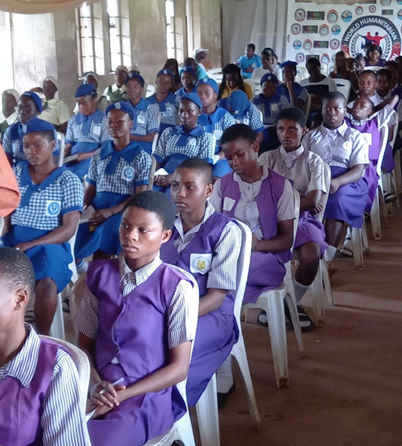
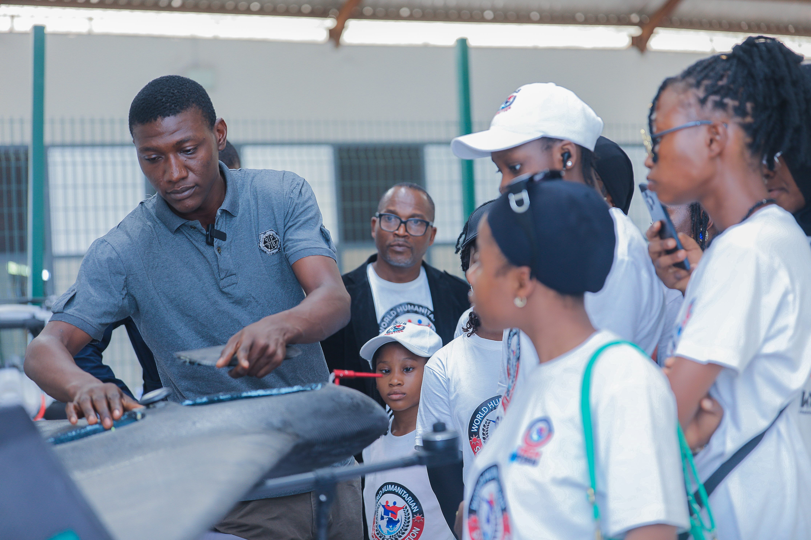
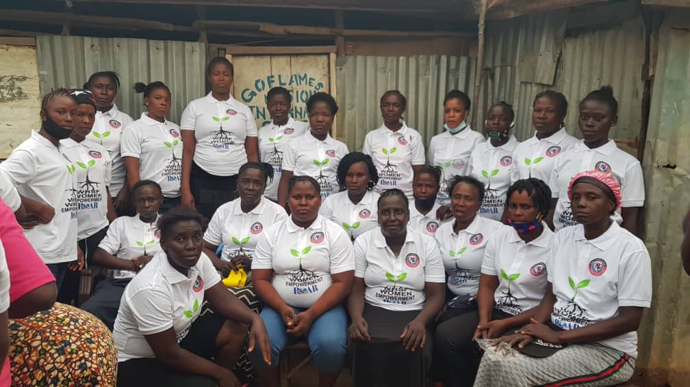

Programme gallery
Learning, building and participating.
A selected visual record of WHSF technology learning, outreach and community activities. Captions describe what is visible without claiming unverified outcomes.



